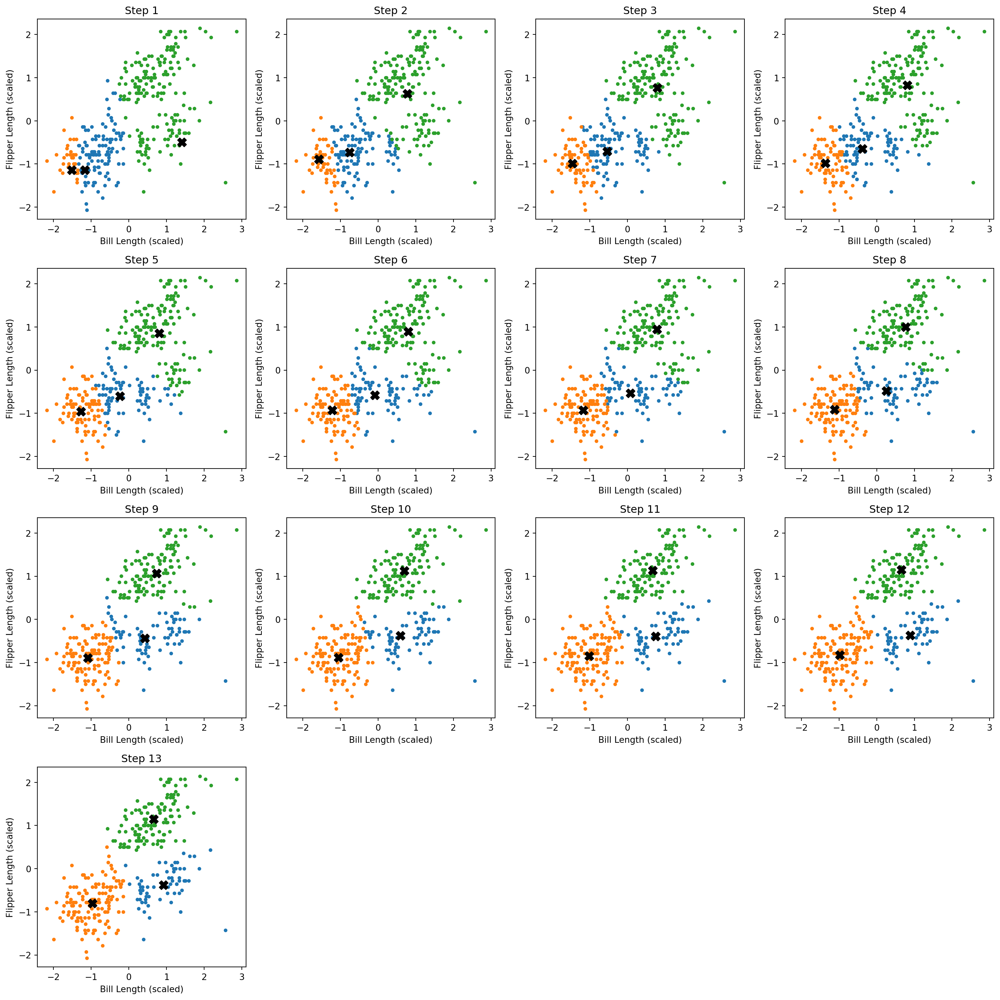

import numpy as np
import pandas as pd
import matplotlib.pyplot as plt
from sklearn.preprocessing import StandardScaler
import math
# Load and preprocess data
penguins = pd.read_csv("palmer_penguins.csv")
X = penguins[['bill_length_mm', 'flipper_length_mm']].dropna().values
scaler = StandardScaler()
X_scaled = scaler.fit_transform(X)
# K-Means from scratch
def kmeans(X, k, max_iters=100, tol=1e-4):
np.random.seed(0)
n_samples = X.shape[0]
centroids = X[np.random.choice(n_samples, k, replace=False)]
history = []
for _ in range(max_iters):
# Assign clusters
distances = np.linalg.norm(X[:, np.newaxis] - centroids, axis=2)
labels = np.argmin(distances, axis=1)
history.append((centroids.copy(), labels.copy()))
# Update centroids
new_centroids = np.array([
X[labels == i].mean(axis=0) if np.any(labels == i) else centroids[i]
for i in range(k)
])
if np.linalg.norm(new_centroids - centroids) < tol:
break
centroids = new_centroids
return centroids, labels, history
# Run K-Means for K=3
final_centroids, final_labels, steps = kmeans(X_scaled, k=3)
n_steps = len(steps)
plots_per_row = 4
n_rows = int(np.ceil(n_steps / plots_per_row))
fig, axes = plt.subplots(n_rows, plots_per_row, figsize=(plots_per_row * 4, n_rows * 4))
axes = axes.flatten()
for i, (centroids, labels) in enumerate(steps):
ax = axes[i]
for j in range(3):
cluster_pts = X_scaled[labels == j]
ax.scatter(cluster_pts[:, 0], cluster_pts[:, 1], s=10, label=f"Cluster {j}")
ax.scatter(centroids[:, 0], centroids[:, 1], c='black', marker='X', s=100)
ax.set_title(f"Step {i+1}")
ax.set_xlabel("Bill Length (scaled)")
ax.set_ylabel("Flipper Length (scaled)")
# Turn off any unused subplots
for ax in axes[n_steps:]:
ax.axis("off")
plt.tight_layout()
plt.show()